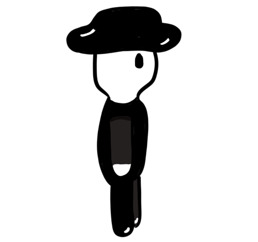
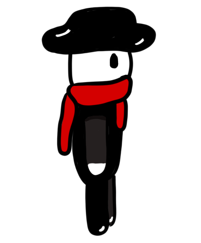
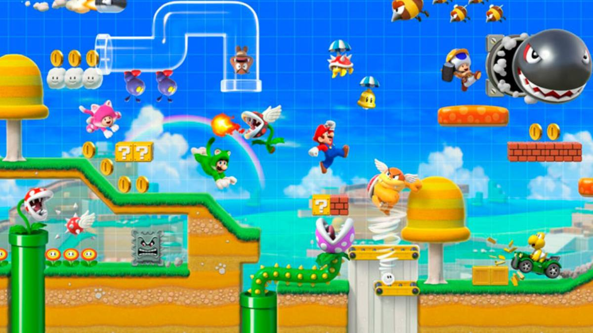

Sinopse: O jogo procede com a aventura de um jovem garoto chamado "Monno" que encontra um cachecol vermelho e após esse acontecimento tudo mudará.
História:A história do jogo narra a aventura de uma personagem que descobre a existência das cores no decorrer da narrativa. Primeiramente ele estará em um mundo totalmente preto e branco mas tudo mudará quando ele encontrar um cachecol “vermelho”. Na sua caminhada até o cachecol marca a primeira parte desta jornada. Após descobrir a existência das cores ele buscará levar esse conhecimento para os vilarejos mais próximos.
Personagem: Há duas variações do personagem até agora, ele com cachecol e sem.
Mecânica:Plataforma 3D
Mario Maker 2
Cantatos: mateus.clecio@nave.org.br / filipe.muniz@nave.org.br